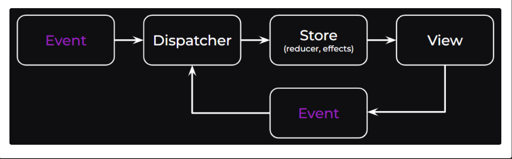

NgRx Signals v20 前陣子釋出了，這一版從別人的文章中，似乎有不少有趣的新東西，其中推出尚在時現階段的 event system, 看文章似乎蠻有趣的，趁著周末有空自己動手玩看看
Event System
複習一下之前大家熟悉的 redux 運作模式，signal store 內的 state change 都會透過 event dispatch 的方式進行異動

定義 Event Type
定義的方式與之前使用 redux 的寫法差不多
1 2 3 4 5 6 import { type } from '@ngrx/signals' ;import { event } from '@ngrx/signals/events' ;export const opened = event ('[Book Search] Opened' );export const queryChanged = event ('[Book Search]QueryChanged' , type <string >());export const loadedSuccess = event ('[Book API] Load success' , type <Book []>());
event function 是一個 event creator function， 當 event 被呼叫時，會回傳一個 object { type: 'xxx', payload: xxxx }event function的第一個參數是 event type，第二個參數為 payload 型別官方建議定義 event type 時，命名規則為 [Source] EventName
上面的定義方式有點囉嗦，但過往定義方式確實是那樣，NgRx 提供另外一種方式可以有系統地整理定義 event type
1 2 3 4 5 6 7 8 export const bookApiEvents = eventGroup ({ source : 'Books API' , events : { loadedSuccess : type <Book []>(), loadedFailed : type <string >(), }, });
透過 eventGroup function 可以將整個定義 event 的行為簡化，在使用上也比較容易些。
使用方式
透過 withReducer 與 on 兩個 function 就可以將 event 與 signal store 結合在一起
1 2 3 4 5 6 7 8 9 10 11 12 13 14 15 16 17 18 19 20 export const BookStore = signalStore ( { providedIn : 'root' }, withState<BookSearchState >({ books : [], isLoading : false , filter : { query : '' , order : 'asc' }, }), withReducer ( on (bookSearchEvents.opened , () => ({ isLoading : true })), on (bookSearchEvents.queryChanged , ({ payload: query }, state ) => ({ filter : { ...state.filter , query }, isLoading : true , })), on (bookApiEvents.loadedSuccess , ({ payload: books } ) => ({ books, isLoading : false , })), on (bookApiEvents.loadedFailed , () => ({ isLoading : false })) ) );
取在 on 內取得現在 store 的 state 值時，可以利用第三個參數的方式取得，可參考 bookSearchEvents.queryChanged 的設定方式
官方文件上寫到另外一些進階用法，這邊就快速貼一下給大家一點感覺
1 2 3 4 5 6 7 8 9 10 11 12 13 14 15 16 17 18 19 20 21 export const CounterStore = signalStore ( withState ({ count1 : 0 , count2 : 0 }), withReducer ( on (incrementBy, (event, state ) => ({ count1 : state.count1 + event.payload , })), on (increment, () => incrementFirst ()), on (incrementBoth, () => [incrementFirst (), incrementSecond ()]), ), ); function incrementFirst (PartialStateUpdater <{ count1 : number }> { return (state ) => ({ count1 : state.count1 + 1 }); } function incrementSecond (PartialStateUpdater <{ count2 : number }> { return (state ) => ({ count2 : state.count2 + 1 }); }
處理副作用類型的動作，可以使用 withEffects 做管理
1 2 3 4 5 6 7 8 9 10 11 12 13 14 15 16 17 18 19 20 21 22 23 24 25 26 27 28 29 import { Events , withEffects } from '@ngrx/signals/events' ;export const BookSearchStore = signalStore ( withEffects ( ( store, events = inject(Events), booksService = inject(BooksService), ) => loadBooksByQuery$ : events .on (bookSearchEvents.opened , bookSearchEvents.queryChanged ) .pipe ( switchMap (() => booksService.getByQuery (store.query ()).pipe ( mapResponse ({ next : (books ) => booksApiEvents.loadedSuccess (books), error : (error : { message: string } booksApiEvents.loadedFailure (error.message ), }), ), ), ), logError$ : events .on (booksApiEvents.loadedFailure ) .pipe (tap (({ payload } ) => console .error (payload))), }), ), );
Dispatching Events
透過 Dispatcher 的方式來發送 event，使用上沒什麼複雜度
1 2 3 4 5 6 7 8 9 10 11 12 13 14 15 16 17 18 19 20 21 22 @Component ({ selector : 'app-root' , template : ` Current Query: {{ store.filter.query() }} <br /> Current store State: {{ store.isLoading() }} <br /> <input type="text" [ngModel]="store.filter.query()" (ngModelChange)="queryBooks($event)" /> ` , providers : [BookStore ], imports : [FormsModule ], }) export class App { readonly store = inject (BookStore ); readonly dispatcher = inject (Dispatcher ); queryBooks (query : string this .dispatcher .dispatch (bookSearchEvents.queryChanged (query)); } }
withReducer 與 withEffects 的執行順序會是 withReducer 的 queryChanged 然後才會呼叫到 withEffects 內有註冊 queryChanged event 的 function。至於在 withEffects 內如果有多個 functions 同時註冊到同一個 event 時，觸發順序則是看程式碼內的撰寫順序，只是寫在 withEffects 內的功能基本上都是非同步，所以回來的結果假設會更新到同一個 store state 時，就會有 race condition 的情形發生，要留意使用。
在 dispatcher 上 NgRx signal v20 有提供 injectDispatch 搭配 eventGroup 一起使用，撰寫上更為乾淨，用法如下
1 2 3 4 5 6 7 8 export class BookSearch { readonly store = inject (BookStore ); readonly dispatch = injectDispatch (bookSearchEvents); queryBooks (query : string this .dispatch .queryChanged (query); } }
Example
搭配 @ngrx/signals/entities 使用時，可以怎麼寫呢?
1 2 3 4 5 6 7 8 9 10 11 12 13 14 15 16 17 18 19 20 21 22 23 24 25 26 27 export const BookStore = signalStore ( { providedIn : 'root' }, withState<BookSearchState >({ isLoading : false , filter : { query : '' , order : 'asc' }, }), withEntities ({ entity : type <Book >(), collection : 'books' }), withReducer ( ... on (bookSearchEvents.queryChanged , ({ payload: query }, state ) => { return { filter : { ...state.filter , query }, isLoading : true , }; }), on (bookApiEvents.loadedSuccess , ({ payload: books } ) => { return [ prependEntities (books, { collection : 'books' }), { isLoading : false , }, ]; }), on (bookApiEvents.loadedFailed , () => ({ isLoading : false })) ),
prependEntities: Adds multiple entities to the beginning of the collection, maintaining their relative order. If the entity collection has entities with the same IDs, they are not added and no error is thrown.
其他相關的新方法有
prependEntity: Adds an entity to the beginning of the collection. If the entity collection has an entity with the same ID, it is not added and no error is thrown.upsertEntity: Adds or updates an entity in the collection. When updating, it does not replace the existing entity but merges it with the provided one. Only the properties provided in the updated entity are merged with the existing entity. Properties not present in the updated entity remain unchanged.upsertEntities: Adds or updates multiple entities in the collection. When updating, it does not replace existing entities but merges them with the provided ones. Only the properties provided in updated entities are merged with existing entities. Properties not present in updated entities remain unchanged.
Reference
Announcing NgRx v20: The Power of Events, Enhanced DX, and a Mature SignalStore! NgRx signals Doc